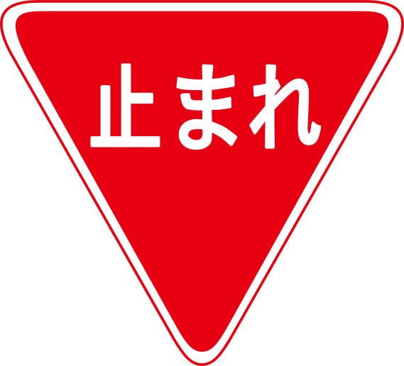
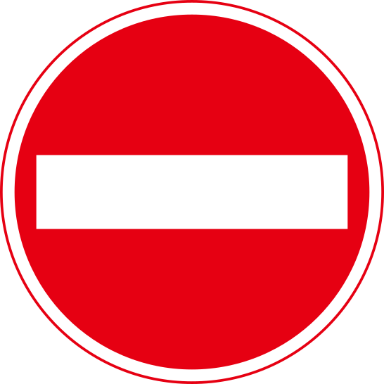
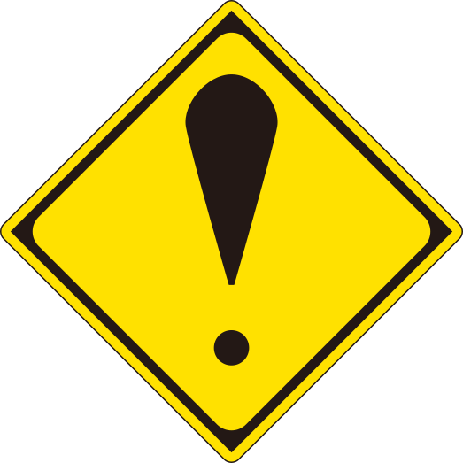
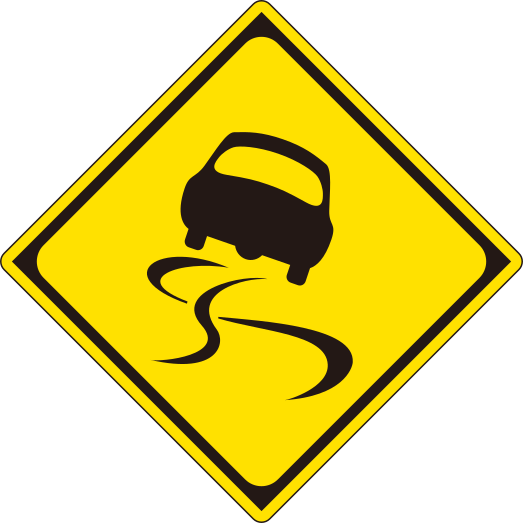
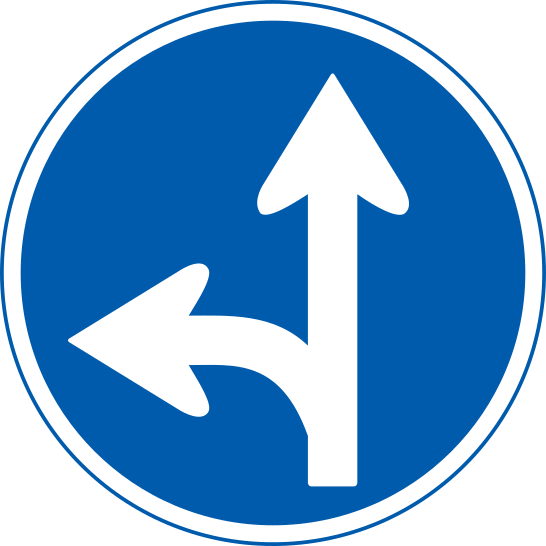
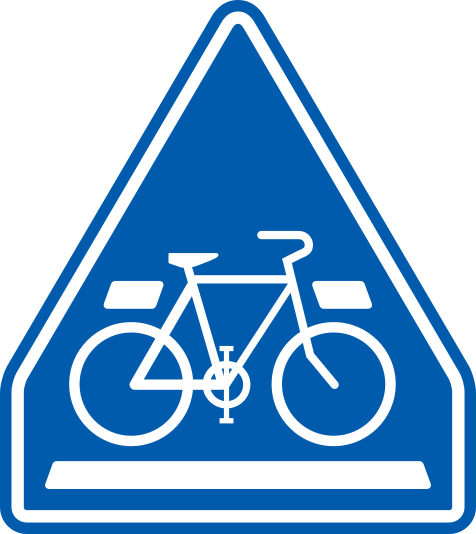

ピクトグラムの配色
ピクトグラムの配色について
ピクトグラムの配色は、情報を効果的に伝えるために非常に重要です。適切な色を使うことで、視認性が向上し、メッセージがより強調されます。一般に、ピクトグラムは明瞭な二色が用いられます。
配色の基本
- コントラスト
- 背景とピクトグラムの色に強いコントラストを持たせることで、視認性が向上します。
- 意味のある色
- 色には一般的な意味があり、それを考慮して配色を選びます。
- 例えば、赤は警告や注意を示し、緑は安全や前進を示します。
- 一貫性
- 同じ意味を持つピクトグラムには、一貫した色を使用することで、視覚的な統一感を持たせます。
色の３属性や配色の詳細については、コチラのページを参照してください。
色の心理効果
- 赤色: 緊急性や危険を示すために使用されます。火災報知器や禁止のサインに使われます。
- 青色: 信頼性や冷静さを示します。情報提供や指示のサインに適しています。
- 緑色: 安全や許可を示します。非常口や安全装置のサインに使われます。
- 黄色: 注意喚起や警告を示します。滑りやすい場所や注意を促すサインに使用されます。
道路標識の例
赤色の標識は停止や侵入禁止などの規制を表す規制標識です。赤色は血や炎など、人間にとって危険に直結する内容を想起させる効果があります。
黄色の標識は危険やスリップ注意などの警戒を促す警戒標識です。黄色は人の眼に大きく入ってくる特徴があり、道路標識以外にも児童の帽子などにも使われています。
青色の標識は目的地の方向や経路などの情報を伝える案内標識です。青地に白文字で表された配色は、瞬時に判断できて正しく情報が伝わりやすい効果があります。






【課題】 ピクトグラムの作成
課題の目的
ピクトグラムのデザインプロセスを理解し、視覚的にわかりやすいシンボルを創作する力を身につける。また、視認性や意味の伝達に配慮したデザインを考える力を身につける。
テーマ設定
身のまわりにある問題を解決するためのピクトグラムを作成する。
上記を満たしていれば自由にテーマ設定してもよいが、決めきれない場合は下記の例を参考にしてもよい。
1. 学校生活
- 教室内のルール: 静かにする、食べ物を持ち込まない、携帯電話の使用禁止など。
- 学校行事: 体育祭や文化祭の案内、集合場所、各種イベントのピクトグラム。
- 設備の使い方: 図書館の利用方法、実験室の注意事項、音楽室の楽器の取り扱い。
2. 交通安全
- 道路標識: 歩行者用信号、横断歩道、一時停止など。
- 公共交通機関: バス停や電車の乗り降り方法、乗車中のマナー（席を譲る、飲食禁止）。
- 自転車の安全: ヘルメットの着用、交通ルールの遵守、自転車専用道の表示。
3. 環境保護
- リサイクル: ゴミの分別、リサイクルボックスの案内。
- エネルギー節約: 照明の消灯、水の節約、再利用の推奨。
- 自然保護: 公園での禁止行為（植物の採取禁止、ゴミの投棄禁止）、野生動物の保護。
4. 健康と安全
- 医療施設: 病院やクリニックの案内、救急用具の場所、応急処置の方法。
- スポーツ施設: スポーツ器具の使い方、安全注意事項、ウォーミングアップの方法。
- 衛生管理: 手洗いの推奨、マスクの着用、感染症予防。
5. 観光案内
- 観光地: 名所やランドマークの案内、写真撮影スポットの表示。
- 公共施設: 博物館や美術館の館内案内、トイレの場所、休憩所の表示。
- 交通案内: 駅の乗り換え案内、タクシー乗り場、観光バスの停留所。
6. デジタル生活
- インターネットの使い方: パスワードの管理、フィッシング詐欺の注意喚起、安全なブラウジング。
- ソーシャルメディア: プライバシー設定の重要性、適切な投稿マナー、サイバーいじめの防止。
- オンライン会議: ミュートの方法、カメラのオン/オフ、チャットの使い方。
7. コミュニティ活動
- 地域イベント: 祭りやフリーマーケットの案内、集合場所、活動内容。
- ボランティア活動: ゴミ拾いの集合場所、配布物の受け取り場所、注意事項。
- 災害時の避難: 避難場所の案内、避難経路、緊急連絡先。
評価基準
ピクトグラム創作課題の評価は、以下の基準に基づいて行われます。
- 創造性
- オリジナリティがあり、テーマに合ったデザインかどうか。
- 新しいアイデアや独自の工夫が見られるか。
- 視認性
- シンプルでわかりやすい形状かどうか。
- 遠くからでも認識しやすいデザインになっているか。
- 配色
- 適切な配色が使われているかどうか。
- 背景とアイコンのコントラストがしっかりしているか、色の意味が適切か。
- テーマの適合性
- 選んだテーマに対して、ピクトグラムが適切に設計されているか。
- テーマの意図を視覚的にしっかり伝えているか。
ただし、次の場合には減点または採点対象外とします。
- 学校の授業という環境にふさわしくない表現があった場合
- 他者の提出物との類似性が認められた場合（両者ともに減点または採点対象外とする）
相互評価のポイントも上記の通りです。自身の作品に対する相互評価は平常点に加味します。また、他者の作品に対して適切に評価できているかも平常点に加味します。
テンプレート
下記テンプレートのいずれかを用いて作成すること。
課題の提出について
- 提出期限
- 2024年6月26日(水) 22:00 まで
- その次の授業で相互評価をしますので、期限は厳守してください。
- 提出ファイル形式
- ① PNGファイル(.png)
- ファイル名「年組番の４桁の数字_氏名_ピクトグラム.png」
- ② Adobe Illustratorファイル(.ai)
- ファイル名「年組番の４桁の数字_氏名_ピクトグラム.ai」
- （例）3年9組3番 海城太朗君の場合、下記２つのファイルを提出。
- ①「3903_海城太朗_ピクトグラム.png」
- ②「3903_海城太朗_ピクトグラム.ai」
- ※異なる形式で提出されたものについては、正しく採点されないので注意。
- 提出先
- 下記リンク先のGoogle Formに提出すること。
-
提出はコチラ
PNGファイル書き出しの方法
保存先のフォルダを選択すると、倍率ごとにフォルダが作成され（今回は400h）、その中に画像ファイルが書き出されます。
相互評価について
提出後の授業で相互評価をします。次のリンク先のフォームを開き、1名あたり6〜8名の作品について評価をしてください。